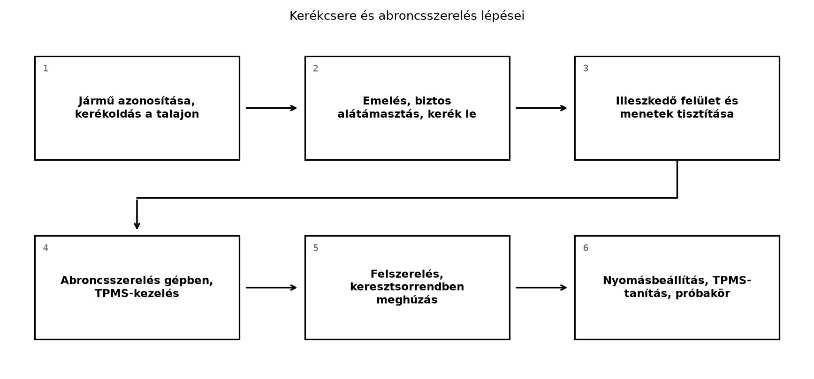

A kerékcsere és gumiabroncs-szerelés az autószerelő mindennapi legalapvetőbb, mégis legnagyobb felelősséggel járó feladatai közé tartozik. A helytelenül meghúzott kerékcsavar, a gondatlan abroncsszerelés vagy a rosszul kiegyensúlyozott kerék nem csupán kényelmetlen vibrációt okoz, hanem közvetlen balesetveszélyt teremt. Ez az alfejezet a téli-nyári kerékcserétől a defektjavításig végigvezet a teljes munka közbeni gyakorlaton.
Képzelj el egy tipikus műhelyi gumisarkot. A központban egy elektromechanikus abroncsszerelő gép áll, amelynek fő részei a rögzíthető forgóasztal, a bontó- és felszerelő kar, valamint a pneumatikus perembontó (bontólapát) és a pneumatikus asztal-befogás. Mellette a kiegyensúlyozó gép található, amelynek tengelyére a kereket rögzítve a gép megpörgeti azt. A gépek mögött polcokon állnak a keréktárcsák, az abroncsok pedig függőleges állványon pihennek. A munka alapvető forrása a sűrített levegő, a nyomatékkulcs és a kézi szerszámok.
Definíció. Kerékkiegyensúlyozás. Olyan eljárás, amelynek során a kerék (abroncs + tárcsa + szelep) tömegének forgástengelyre szimmetrikus eloszlását biztosítjuk. A kiegyensúlyozatlanság a kiegyensúlyozatlan tömeg () és a súlypont forgástengelytől mért távolságának () szorzata: , egysége g·mm; a gép a beállított sugáron elhelyezendő ellensúly tömegét adja meg grammban.
Definíció. Meghúzási nyomaték. A csavarkötés rögzítéséhez szükséges, mértékegységgel rendelkező forgatónyomaték (Nm). A kerékcsavarok esetében a gyártói előírás biztosítja a tárcsa kellő szorítását a deformáció vagy a menetkárosodás elkerülése mellett. Ez nem egy „minél erősebb, annál jobb” érték.
Összefüggés. Nyomaték és erő. A nyomaték
az erőkar
()
és a rá merőleges erő
()
szorzata:
.
A dugókulcs-hosszabbító (egyenes szár) és a fogantyúra húzott cső a
beállítandó értéket nem változtatja meg. Csak a kulcs hossztengelyében,
a fej elé szerelt, a karhosszt növelő adapternél (ún. „varjúláb” feltét)
kell korrigálni:
,
ahol
a kulcs hatásos karhossza,
az adapter hossztengely irányú hosszabbítása
(ellenőrizendő: gyártói javítási adat).
1. példa. Mekkora nyomatékot ad át a hatásos karhosszú kulcs, ha a fogantyúra merőlegesen erőt fejtünk ki? .
2. példa. Az -es nyomatékkulcs fejére a hossztengelyben -es adaptert szerelünk; az előírt nyomaték . A beállítandó érték: . Ha ugyanezt a kulcsot csak dugókulcs-hosszabbító szárral használjuk, a beállított érték marad .
Továbbvitt eredmény. A itt gyakorolt kerékszerelési munkalap a Gyakorlati vizsgafelkészülés alfejezetben közvetlenül vizsgafeladattá válik; a kerék és az abroncs szakszerű leszerelése a Futómű és kormány szerelése alfejezetnél későbbi rutinjaihoz vezet.
1. Emelés és biztonság Kocsiemelővel (garázsemelővel) megemelt jármű alá nyúlni vagy bemenni tilos: a kerék levétele előtt a járművet a gyártói pontokon bakra kell támasztani. Emelőpadon (oszlopos emelőn) a gyártói emelési pontokon, reteszelt emelővel lehet dolgozni. A kerékcsavarokat a talajon, a jármű súlyán állva kezdjük meglazítani, majd az emelés után távolítjuk el.
2. Illeszkedő felületek tisztítása A kerék leszerelése után a legfontosabb lépés a kerékagy és a tárcsa illeszkedő felületének megtisztítása. A felületen lévő rozsda, korrózió vagy sár a tárcsa enyhe radiális vagy tengelyirányú ütését okozhatja, ami fékpedál-pulzálásként vagy kormányremegésként jelentkezik. Drótkefével vagy erre a célra szolgáló tárcsatisztítóval távolítsuk el a szennyeződést.
3. Meghúzási sorrend és nyomaték A kerék
visszaszerelésekor a csavarokat kézzel, keresztsorrendben, úgynevezett
csillag alakban húzzuk meg. A lépéseket mindig fokozatosan hajtsuk
végre: először kézzel, majd nyomatékkulccsal a végső nyomaték felére,
végül a teljes előírt értékre. A rögzítés után 50–100 km megtétele után
ellenőrizni kell a meghúzást
(ellenőrizendő: gyártói karbantartási előírás), mert a
tárcsa az első terheléseknél ülhet meg teljesen. A nyomaték jellemző
értéke személyautóknál
,
de ez típusonként jelentősen eltér
(ellenőrizendő: gyártói javítási adat).
Az alábbi ábra a meghúzási sorrendet mutatja: négy csavarnál 1-3-2-4, öt csavarnál a kerületi helyek 1-3-5-2-4 sorrendjében, mindig a már meghúzottal átellenes csavar következik. Körben, sorban húzva a tárcsa féloldalasan ül fel. A végső meghúzás nyomatékkulccsal, a földön álló járművön, egyenletes húzással a kattanásig történik; ütvecsavarozóval végighúzni tilos. A HTML-változatban az öt csavar sorrendje lépésenként lejátszható.
4. Abroncs lefejtése a tárcsáról A kerékről elsőként a szelepet kell eltávolítani, vagy ha TPMS (Tyre Pressure Monitoring System) érzékelő van, a rögzítőcsavart ki kell engedni. A lefejtés előtt az abroncsot teljesen leengedjük. A szerelőgépen a tárcsát központosan rögzítjük, a bontófejet a tárcsa pereméhez illesztjük, és a talpat a szerszám és a tárcsa közé vezetjük.
5. TPMS érzékelő kezelése A direkt TPMS érzékelő
nélkülözhetetlen eleme a keréknek. A bontás során figyeljünk arra, hogy
a gumi lefejtő szerszám ne érjen hozzá a szelephez, mert az érzékelő
tönkremegy. Gumiszelepes (snap-in) érzékelőnél abroncscserekor a
gumiszelepet újra kell cserélni; fém anyás (clamp-in) érzékelőnél új
tömítést és anyát szerelünk, és az anyát nyomatékkulccsal a gyártói
nyomatékra húzzuk meg, mert a túlhúzás deformálja az érzékelő házát
(ellenőrizendő: gyártói előírás).
6. DOT-kód és futásirány Az oldalfalon találjuk a
DOT-kódot. Az utolsó négy számjegyből az első kettő a hét, az utolsó
kettő az év. Például a 2520 a 2020-as év 25. hetét jelöli.
A nyilat vagy ROTATION feliratot az abroncs futásirányának
megfelelően kell szerelni; aszimmetrikus mintázatnál az
INSIDE/OUTSIDE jelölés a belső/külső oldalt
jelzi.
7. Abroncs felszerelése A tárcsa peremére
abroncsszerelő pasztát viszünk fel. Ez megkönnyíti a gumis perem
csúszását és megakadályozza a perem roncsolódását. Az abroncsot a
szerelőgéppel a tárcsára emeljük, majd a peremet be kell pattintani. A
fellövést a gyártó által előírt maximális nyomás alatt végezzük, soha ne
lépjük túl az abroncsgyártó által megadott legnagyobb felültetési
nyomást (gyakran kb. 3,0–3,3 bar;
ellenőrizendő: abroncsgyártói adat). A sérült perem vagy
tárcsa, illetve a túlnyomás miatt az abroncs robbanásszerűen szétválhat,
ezért fellövés közben ne hajoljunk az abroncs fölé, használjunk
pattintós töltőfejet és távolról leolvasható nyomásmérőt (ahol van,
védőketrecet), és ne nyúljunk a perem és a tárcsa közé. Ha a perem a
megengedett nyomáson nem ül fel, engedjük le az abroncsot, és
ellenőrizzük a peremet és a kenést.
8. Nyomásbeállítás és TPMS-tanítás A szerelt kerékbe hidegen, a gyártói adattábla szerinti nyomást töltjük. A direkt TPMS-érzékelőket a járművön a rendszerteszterrel vagy a jármű menüjében lehet „betanítani”, amíg a jármű nem mozdul. Az indirekt TPMS-t a menüben kell kalibrálni. A beállítást csak a gyártó utasítása szerint végezzük.
Az alábbi képsor az abroncsszerelés hat fő fogását mutatja a 4–8. pont szerint: leeresztés és szelepbetét ki, peremlenyomás a szeleptől (TPMS-érzékelőtől) távol, befogás és szerelőpaszta, a perem átemelése szerelőfejjel és szerelővassal, az új abroncs a forgásirány szerint, végül felfújás peremfelugrásig úgy, hogy nem hajolunk a kerék fölé. A veszélyes fogásokat (kéz a perem és a forgóasztal között, ráhajolás felfújáskor) a rajz jelöli. A HTML-változatban a képsor lépésenként lejátszható.
A kiegyensúlyozást minden kerékcserénél el kell végezni, mert az abroncs tömegeloszlása nem tökéletes. A kiegyensúlyozó gép két fő paramétert mér: a statikus kiegyensúlyozatlanságot és a dinamikus kiegyensúlyozatlanságot. A gép a kerék felszerelése után megadja, hová és hány gramm súlyt kell elhelyezni.
9. A gép kezelése Megadjuk a tárcsa méreteit (a gép
tengelyétől mért távolság, szélesség, átmérő) vagy a gyártói
adatbázisból választjuk ki őket. Az ellensúly elhelyezésének módja lehet
ragasztott (belső perem) vagy leszorított (külső perem). A modern gépek
lézeres mutatóval jelzik a súly pontos helyét. Indítás előtt a kerékvédő
burkolatot le kell zárni; a forgó kerékhez nyúlni tilos. A
kiegyensúlyozás akkor elfogadható, ha a maradék kiegyensúlyozatlanság
és
között van (ellenőrizendő: műhelyi mérési gyakorlat).
10. Matching-eljárás Ha a kiegyensúlyozás után is jelentős a maradék kiegyensúlyozatlanság vagy az abroncs kifutási ütése nagy, a gumi és a tárcsa optimális helyzetét görgetéssel vagy a gép kifogási mérésével lehet meghatározni. Ilyenkor az abroncsot a tárcsán elforgatjuk a megadott szöggel, majd újra kiegyensúlyozzuk.
11. Javítható-e a defekt? A futófelület középső
részén keletkezett, kisméretű (jellemzően 6 mm-nél kisebb) defekt
javítható (ellenőrizendő: abroncsgyártói szabvány). Az
oldalfalon, a vállzónában vagy a peremzónában keletkezett sérülést
tilos javítani. A javítás során belülről kell tömíteni,
a legegyszerűbb a gomba (univerzális dugó és belső tapasz kombinációja).
A külső csapos javítást ideiglenes, szakszerűtlen megoldásként kell
elutasítani, mert nem zárja a szivárgást megbízhatóan.
12. Abroncs tárolása A garnitúrák tárolása során a gumik legyenek tisztán, sötét, hűvös, száraz helyen. Az abroncsokat oldószertől, olajtól és ózonforrástól (villanymotor, hegesztő) távol tároljuk. Felni nélküli abroncsot állva tároljunk, és havonta forgassuk el; felnire szerelve fektetve, legfeljebb négyet egymásra rakva vagy felakasztva tároljuk.
Az elhasznált abroncs nem kerülhet kommunális hulladékba; a műhely a
hulladékgazdálkodási szabályok szerint gyűjti, és engedéllyel rendelkező
átvevőnek adja át
(ellenőrizendő: hatályos hulladékgazdálkodási jogszabály, abroncs-visszavételi kötelezettség).

Feladat. Négy kerék cseréje nyári garnitúrára, TPMS-érzékelőkkel.
Cél. A kerekek szakszerű, biztonságos rögzítése a gyártó előírása szerint.
Szerszámok és eszközök: kerékemelő, állványok,
nyomatékkulcs, kereszthorog, hosszabbító, dugókulcs-készlet, sűrített
levegő, nyomásmérő, TPMS-tesztelő, rendszerteszter
(szükség szerint).
Anyagok: új kerékcsavarok (ha a gyártó előírja),
TPMS-tömítés. A kerékcsavar menete és felfekvő felülete tiszta és száraz
legyen; kenőanyagot (rézpaszta, szerelőspray) csak akkor használjunk, ha
a gyártó kifejezetten előírja
(ellenőrizendő: gyártói adat).
Biztonsági korlát. A feladat tanműhelyi környezetre, oktató felügyeletére és a gyártói javítási utasítás betartására vonatkozik; a megadott értékek tanulási példák.
(ellenőrizendő: gyártói javítási adat).(ellenőrizendő: gyártói adattábla)).Minőségellenőrzés. Ellenőrizze, hogy a kerékcsavarok nyomatéka a gyártói intervallumban van-e, a gumi nyomása megfelelő, a TPMS figyelmeztető lámpa kialudt, és a kerekek nem ütnek.
Ügyfélpanasz: A gépkocsi 100 km/h felett kormányremegést és enyhe fékpedál-pulzálást produkál. A gumis műhelyben a kerekeket kiegyensúlyozták, de a panasz megmaradt.
Vizsgálat: A szerelő a kerék leszerelése után észreveszi, hogy a kerékagy és a tárcsa illeszkedő felületén vastag rozsdaréteg található. A tárcsa nem feküdt fel síkban a kerékagyra, ami a forgástengelyhez képest enyhe excentricitást okozott. Ez a centrális ütés a féknyergekben és a kormányzásban remegést generált.
Javítás: Az illeszkedő felületek alapos letisztítása drótkefével és rozsdaoldóval. A tárcsa és a kerékagy közé távtartó lemez nem került, csak a tiszta fémet tettük össze. A kereket újra kiegyensúlyoztuk.
Tanulság: A kiegyensúlyozás hatástalan, ha a kerék nem ül fel tökéletesen a párjára. A kerékcserének része a felülettisztítás.
(ellenőrizendő: tipikus érték), ami a menetek
megnyúlásához, a tárcsa deformációjához vagy a csavar fejének
letöréséhez vezet.ROTATION nyilat figyelmen kívül hagyják. A
fordítva szerelt abroncs rosszabb vizes tapadást, nagyobb zajt és
gyorsabb kopást okoz.1521? (2021. 15.
hete.)1. feladat (A) Egy 4 csavaros kerék meghúzásánál mi a keresztsorrend helyes sorrendje? (Rajzold le a csavarok helyzetét 1-től 4-ig és a sorrendje.)
2. feladat (A) Mi a különbség a gumiszelepes (snap-in) és a fém anyás (clamp-in) TPMS érzékelő között?
3. feladat (B) A nyomatékkulcs fejére a hossztengelyben -es karhossz-növelő adaptert szerelsz (). A gyártói nyomaték . Mekkora értéket állíts be a kulcson?
4. feladat (B) Sorolj fel három olyan okot, amiért egy abroncsot tilos megjavítani. (Például: oldalfalon lévő lyuk; 6 mm-nél nagyobb lyuk; a szövetváz sérülése látszik.)
5. feladat (C) Miért fontos a kerékagy és a tárcsa illeszkedő felületének tisztítása? Milyen hiba tünete utal erre?
6. feladat (D) Egy autó kormánya 110–130 km/h között vibrál. A kerekeket éppen kiegyensúlyozták, de a vibráció marad. Mi a következő logikus lépés a diagnosztikában? (Pl. a kiegyensúlyozó gép kalibrálása; a gumiabroncs kifutásvizsgálata; a futómű bekötési pontjainak, lengéscsillapítók stb. ellenőrzése.)
1. feladat (A) A négy csavarnál a keresztsorrend: 1-3-2-4 (vagy 1-3, 2-4). A lényeg, hogy soha ne a szomszédos csavart húzzuk meg közvetlenül az előző után.
2. feladat (A) A gumiszelepes (snap-in) tömítőpereme van, és egyszerűen az anyag rugalmassága tartja a furatban. A fém anyás (clamp-in) szelepnek tömítése van, anyával kell rögzíteni kívül-belül.
3. feladat (B) . Az adapter megnöveli a tényleges kart, ezért a kulcson kisebb értéket kell beállítani; dugókulcs-hosszabbító szárnál nincs korrekció.
4. feladat (B) (Például) 1. A lyuk az oldalfalon van; 2. A lyuk 6 mm-nél nagyobb; 3. A belső szövetréteg megsérült vagy a gumifal repedt.
5. feladat (C) A szennyezett felület a tárcsa enyhe excentricitását okozza, ami fékpedál pulzálását és kormányremegést okoz. A tisztítás a kerékcserének kötelező része.
6. feladat (D) A következő lépés a futómű elemeinek átvizsgálása (szilentek, gömbcsuklók, lengéscsillapító), továbbá a kerék gördülési kifutásának (radial runout) mérése, mert az egyensúlyozás nem szünteti meg a radiális erőingadozást, ha a gumi maga deformált.
A kerékcsere és abroncsszerelés a járműbiztonság sarokpontja. A
kerékcsavarokat mindig a gyártói nyomatékra, keresztsorrendben, a jármű
leengedése után húzzuk meg. A kerékagy és a tárcsa felületét minden
szerelésnél meg kell tisztítani. Az abroncsot a DOT-kód és a futásirány
(ROTATION vagy INSIDE/OUTSIDE)
figyelembevételével, a TPMS-érzékelő védelmével szereljük. A
kiegyensúlyozás nem helyettesíti a pontos illeszkedést, és a
defektjavítás csak a futófelület középső részén, a gyártói mérethatárig
megengedett; az oldalfal sérülése mindig selejtezést jelent.
Továbbvitt eredmény. A jelen munkalap és a gyakorlatok
közvetlenül felkészítenek a vizsga Gyakorlati
vizsgafelkészülés alfejezetére.
Az alfejezet a gumiabroncs-szerelés általános műhelyi gyakorlatára és a diagnosztikai alapelvekre épít. Az alábbi pontok ellenőrzést igényelnek a kiadás előtt:
(ellenőrizendő: gyártói javítási adat).(ellenőrizendő: gyártói útmutató).(ellenőrizendő: abroncsgyártói szabvány).(ellenőrizendő: hatályos hulladékgazdálkodási jogszabály).